What is Node.js?
- Node.js is an open source, cross-platform runtime environment for developing server-side and networking applications.
- Node.js uses an event-driven, non-blocking I/O model that makes it lightweight and efficient, perfect for data-intensive real-time applications that run across distributed devices.
source nodejs.org
NPM
npm is the default package manager for Node.js.
It manages dependencies for an application.
It also allows users to install Node.js applications that are available on the npm registry.
Requirements:
One of the following versions of Node.js must be installed to run npm:
- 14.x.x >= 14.17.0
- 16.x.x >= 16.13.0
- 18.0.0 or higher
Multi-Platform (Linux, Mac, Windows)
One development language JS on client and server side
Open source technology
Many NPM packages availables on npmjs.org
Short learning curve (Event loop theory, JavaScript, Event programming)
Installation
LTS: NodeJs.org
npm i node@14.20.0
NodeJs - v12 or higher (Recommended)
NVM
Using nvm it is easy to change version
1. To see the entire list of Node.js versions
$ nvm list
2. To install a specific version
$ nvm install [version]
Ex : nvm install 14.17.0
If multiple versions have been installed,
$ nvm use 16.13.0
can be used to switch to another version
initializing a project
$npm init -y
package.json
{
"name": "multi-threading_demo",
"version": "1.0.0",
"description": "",
"main": "index.js",
"scripts": {
"test": "echo \"Error: no test specified\" && exit 1"
},
"keywords": [],
"author": "",
"license": "ISC"
}
Read file and display it
var fs = require('fs');
fs.readFile('./sample.txt','utf8', function(err,data) {
if(err) {
return console.log(err);
}
console.log(data);
});
Simple http server
var http = require('http');
http.createServer(function(req, res) {
res.writeHead(200, {'Content-Type':'text/plain'});
res.end('Hello World');
}).listen(8000, '127.0.0.1');
console.log('Server running at http://localhost:8000/');
Event driven Architecture
The primary building blocks of Node.js' event-driven architecture are:
-
EventEmitters: Objects that emit named events.
- Listeners: Functions that are called when a specific event is emitted.
const EventEmitter = require('events');
const myEmitter = new EventEmitter();
myEmitter.on('FirstEvent', (arg1, arg2, ...) => {
// Your event handling logic here
});
// Raising FirstEvent
myEmitter.emit('FirstEvent', 'This is my first Node.js event emitter example.');
Non blocking I/O model
Blocking
const fs = require("fs");
const data = fs.readFileSync("/file.md"); // blocks here until file is read
console.log(data);
moreWork(); // will run after console.log
Non blocking
const fs = require("fs");
fs.readFile("/file.md", (err, data) => {
if (err) throw err;
console.log(data);
});
moreWork(); // will run before console.log
Synchronous Vs Asynchronous
Synchronous Asynchronous
let greet_one = "Hello" let greet_one = "Hello"
let greet_two = "World!!!" let greet_two = "World!!!"
console.log(greet_one) console.log(greet_one)
for(let i=0; i < 100 000 000; ++i){ setTimeout(function(){
} console.log("Asynchronous");
console.log(greet_two) }, 10000)
console.log(greet_two);
Asynchronous vs Non blocking
- Asynchronous: API will return immediately after calling the request. In the background, it will start a process to fulfill the request.
- Non blocking: If API cannot complete the work, it returns an error immediately.
I/O Latency
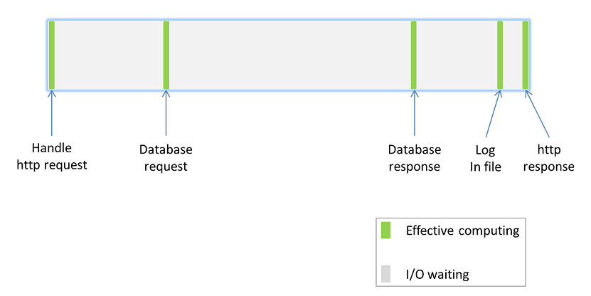
Most of the the time the process waits for I/O (memory, disk, network)
Multi-threading
- Context switching overhead
- Memory consumption
- Manage concurrency
- Dead lock
Multi processes
- High memory usage
- Process scheduling overhead
and always waiting I/O...
Event Loop == Main thread
The beauty of the event loop is not of running everything in a single thread, but it’s available to “put aside” long time-consuming I/O operations to keep the execution of other instructions.
Event Loop theory
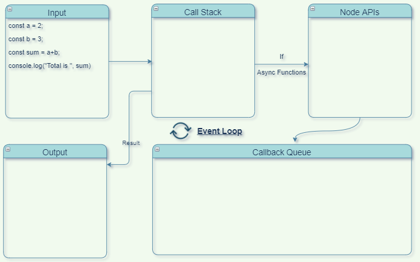
Delegate I/O part and manage callbacks
Event Loop theory
Delegate I/O part and manage callbacks
Event Loop theory
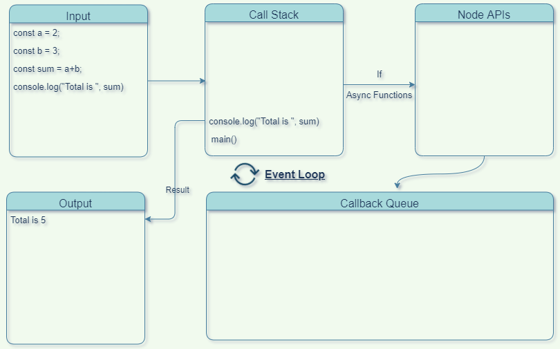
Delegate I/O part and manage callbacks
Event Loop theory
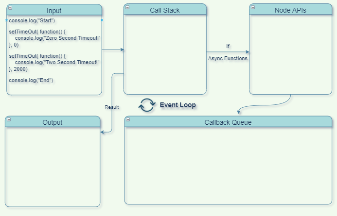
Delegate I/O part and manage callbacks
Event Loop theory
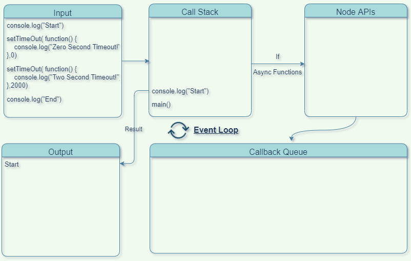
Delegate I/O part and manage callbacks
Event Loop theory
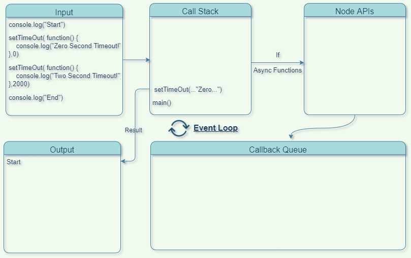
Delegate I/O part and manage callbacks
Event Loop theory
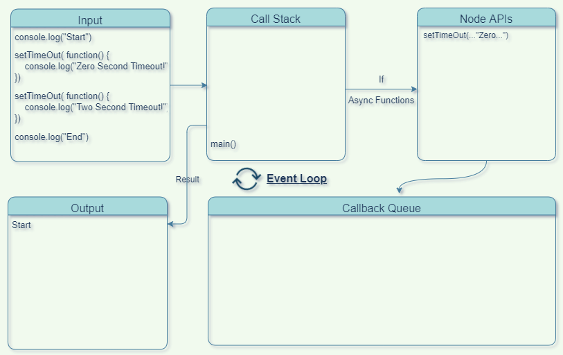
Delegate I/O part and manage callbacks
Event Loop theory
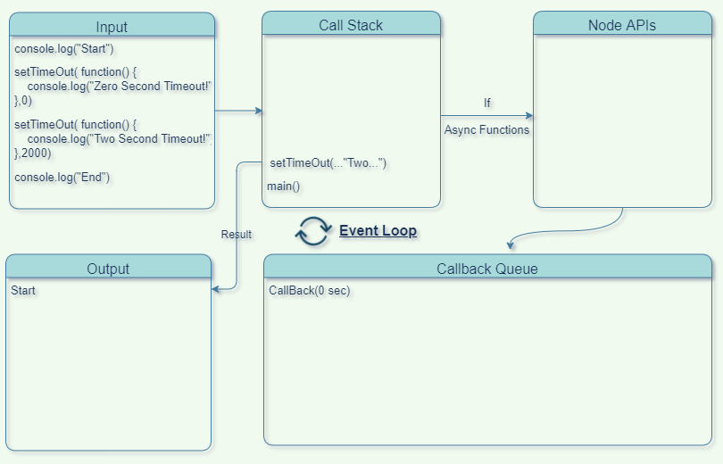
Delegate I/O part and manage callbacks
Event Loop theory
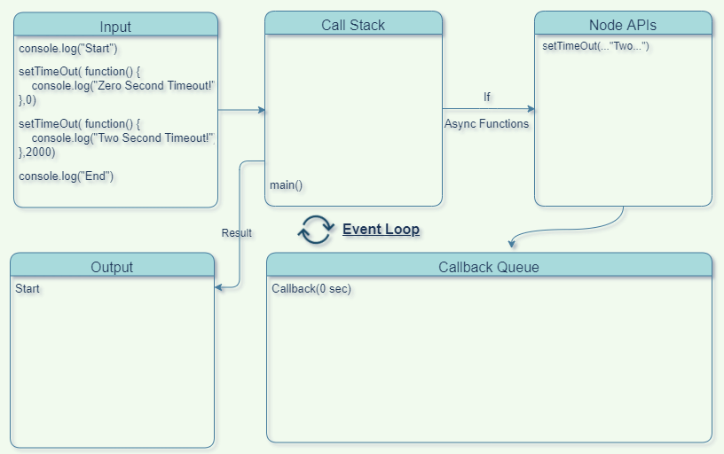
Delegate I/O part and manage callbacks
Event Loop theory
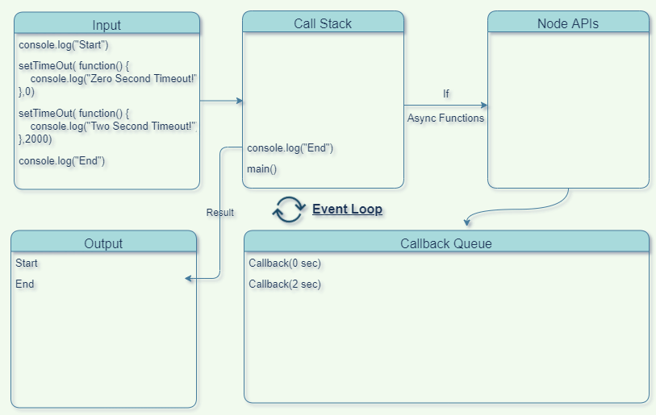
Delegate I/O part and manage callbacks
Event Loop theory
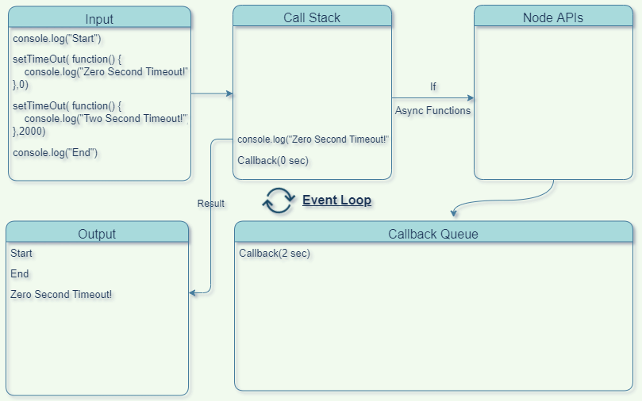
Delegate I/O part and manage callbacks
Event Loop theory
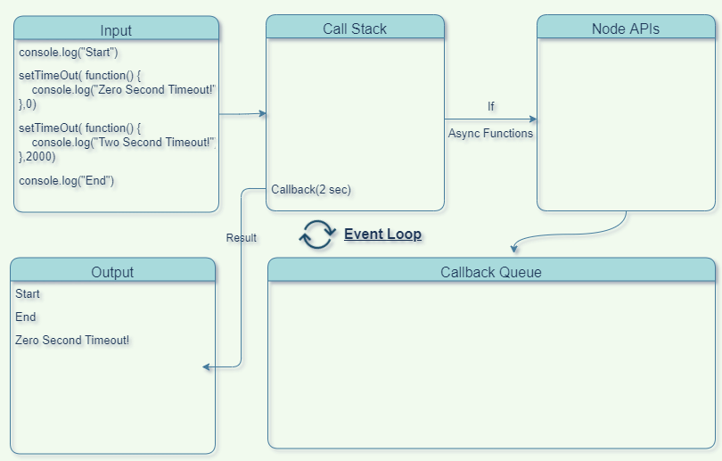
Delegate I/O part and manage callbacks
Event Loop theory
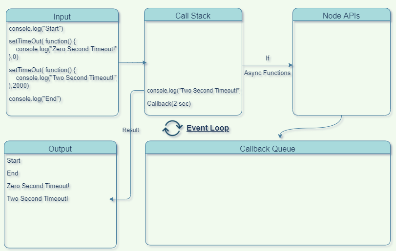
Delegate I/O part and manage callbacks
Event Loop theory
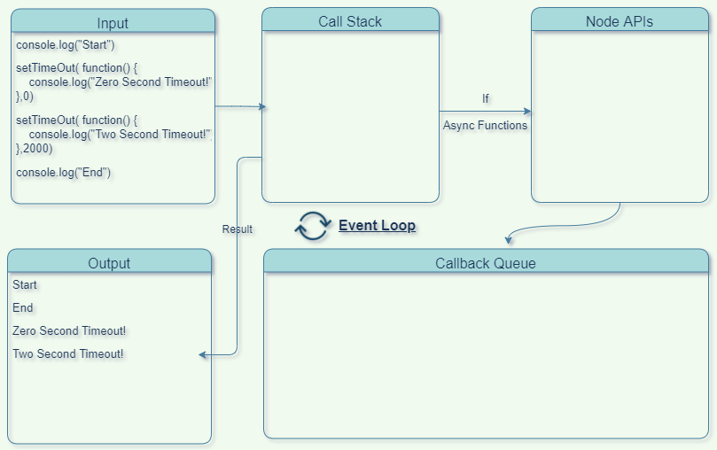
Delegate I/O part and manage callbacks
Async/Await
async function showAvatar() {
// read our JSON
let response = await fetch('/article/promise-chaining/user.json');
let user = await response.json();
// read github user
let githubResponse = await fetch(`https://api.github.com/users/${user.name}`);
let githubUser = await githubResponse.json();
return githubUser;
}
There can be many reasons to write nodejs addons:
- You may want to access some native apis that is difficult using JS alone.
- You may want to integrate a third party library written in C/C++ and use it directly in NodeJs.
- You may want to rewrite some of the modules in C++ for performance reasons.
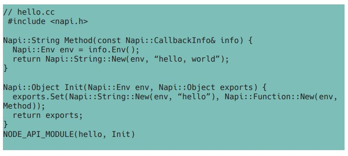
int info_length = info.Length();
int max1 = info[0].As< Napi::Number >();
int max2 = info[1].As< Napi::Number >();
int max3 = info[2].As< Napi::Number >();
source